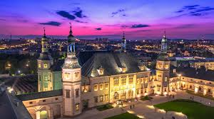
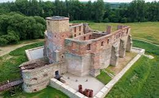
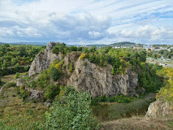
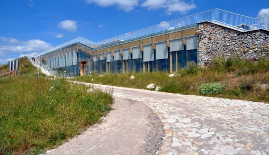
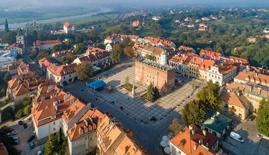
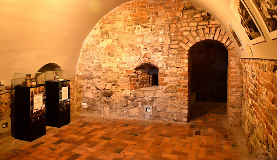
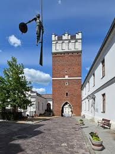
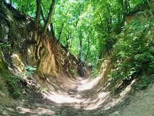

Świętokrzyskie
Najważniejsze miasta
Kielce
Kielce to stolica województwa świętokrzyskiego, znana z pięknych terenów wokół Gór Świętokrzyskich. Warto odwiedzić Pałac Biskupów Krakowskich oraz rezerwat przyrody Kadzielnia, gdzie można podziwiać unikalne formacje skalne. Zamek Biskupów Krakowskich
Barokowa rezydencja z XVII wieku, dziś siedziba Muzeum Narodowego. W środku można podziwiać bogate wnętrza oraz kolekcję sztuki i eksponaty związane z historią regionu.
Kadzielnia
Rezerwat przyrody z efektownym kamieniołomem i podziemnymi jaskiniami. To także popularne miejsce koncertów i wydarzeń plenerowych w amfiteatrze.
Geopark Kielce – Centrum Geoedukacji
Nowoczesne centrum nauki poświęcone geologii Gór Świętokrzyskich. Można tu zobaczyć interaktywne wystawy oraz przeżyć symulację podróży do wnętrza Ziemi.
Sandomierz
Sandomierz to malownicze miasto nad Wisłą, pełne średniowiecznych zabytków, w tym Katedry Sandomierskiej i Ratusza. Słynie także z wąwozów lessowych i pięknych widoków na okoliczne wzgórza. Podziemna Trasa Turystyczna
System dawnych piwnic i tuneli, którymi poruszali się kupcy w średniowieczu. Trasa pełna jest legend, a przewodnicy opowiadają o duchu Haliny Krępianki, który rzekomo tam straszy.
Brama Opatowska
Jedyna zachowana brama wjazdowa do średniowiecznego Sandomierza, z której roztacza się piękny widok na miasto. To jeden z symboli Sandomierza.
Wąwóz Królowej Jadwigi
Malowniczy wąwóz lessowy o stromych ścianach, idealny na spacer. Według legendy często przechadzała się tędy królowa Jadwiga.